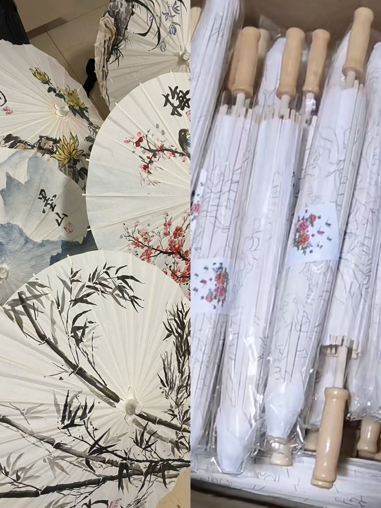

邂逅指尖上的非遗，解锁专属油纸伞
|  |
DIY你的油纸伞油纸伞，开合间是流转千年的东方雅韵。想不想亲手打造这份古典浪漫？我们的油纸伞材料包，正是圆梦的“魔法盒”。 打开材料包，精选的竹条粗细均匀、质地坚韧，经打磨处理，光滑无刺，拼接时轻松上手；轻薄柔韧的油纸，防水性佳、色泽温润，铺展伞面平整顺滑，能完美吸纳颜料。附赠颜料色彩纯正、画笔笔触细腻，从典雅水墨到明艳彩绘，随心调配、肆意挥洒。更有详细教程，图文并茂、步骤清晰，新手也能迅速掌握诀窍，依喜好 DIY 独一无二的图案，承载满心期许。 入手这份材料包，不只是买材料，更是开启一场沉浸式国风手工之旅。闲暇午后，静心组装、描绘，于忙碌日常觅诗意角落，成品自用典雅脱俗，送人饱含心意。别错过，借小小材料包，让指尖在非遗工艺里穿梭，“造”出独一份的伞间风情。 |